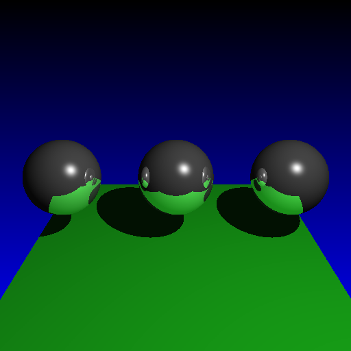
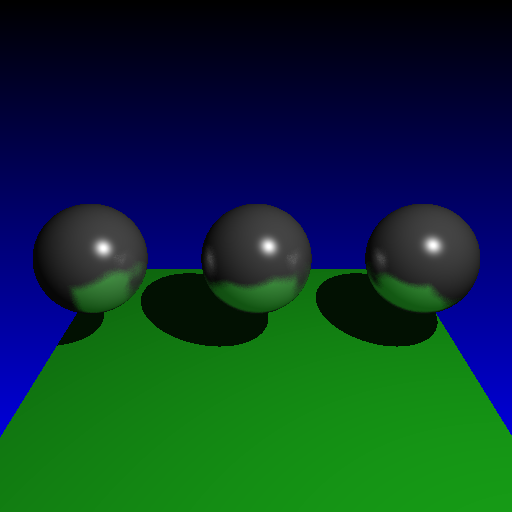

Objective 5:
Glossy Reflections
I wrote code for Glossy Reflection materials to get this sort of diffuse "fuzzy" reflection look. This is later combined with texture mapping for the table in my final scene.
 Specular reflection from Assignment 4
Glossy Reflections with reflection coefficient of 0.4  Glossy Reflections with reflection coefficient of 0.6
|
Written by: Mike Jutan
CS 488 - Computer Graphics
University of Waterloo